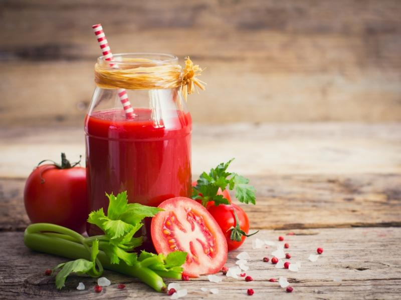
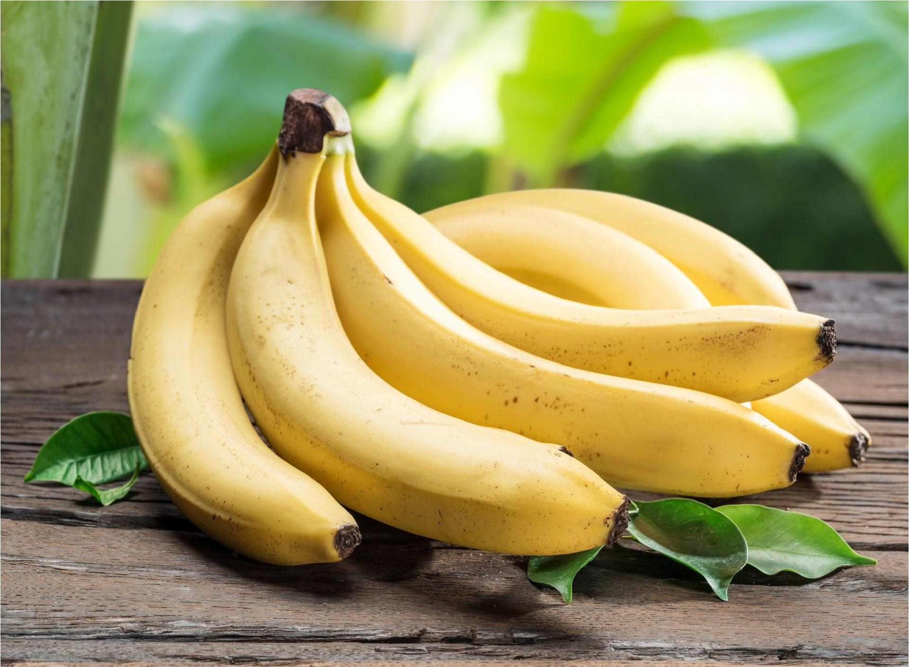

Strona Główna
Przepisy
Ciekawostki
O nas
Kontakt
CIEKAWOSTKI
CZY WIEDZIAŁEŚ ŻE...
1. Wysokość może zmienić smak. Sok pomidorowy na samolocie jest super słodki.

2. Ludzie dzielą 60% DNA z bananami.

3. Ziemniaki to w 80 % woda i 20 % masa stała.